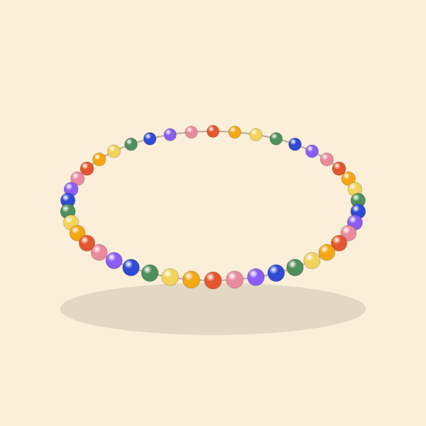

Tentang Ronce
Ronce dimulai tahun 2024 dari kebiasaan merangkai gelang untuk teman sekelas. Sekarang kami bertiga, masih merangkai di meja yang sama.
Nama kami diambil dari kata meronce: memasukkan manik satu per satu ke dalam tali. Pekerjaannya pelan, dan memang tidak bisa dipercepat. Setiap gelang dicek dua kali sebelum dikemas: simpul ditarik, huruf dibaca ulang, ukuran diukur lagi dengan pita.
Manik kaca dan huruf akrilik kami beli dari pemasok di Yogyakarta. Batu lava dan kayu sawo dari pengrajin di Magelang dan Jepara. Mutiara air tawar datang dari Lombok, dan kami pilih langsung butir per butir.
Yang kami pegang
- Jujur soal bahan. Kuningan kami tulis kuningan, bukan emas. Mutiara yang tidak bulat sempurna kami sebut apa adanya.
- Foto sesuai barang. Warna di foto bisa sedikit beda karena layar, tapi bentuk dan jumlah manik sama.
- Gampang dihubungi. Admin membalas WhatsApp setiap hari pukul 08.00–20.00.
- Nama usaha
- Ronce (usaha perseorangan)
- NIB
- 1209240078321
- Alamat workshop
- Jl. Diponegoro No. 52, Sidorejo, Kota Salatiga 50711
- Berdiri
- 2024
